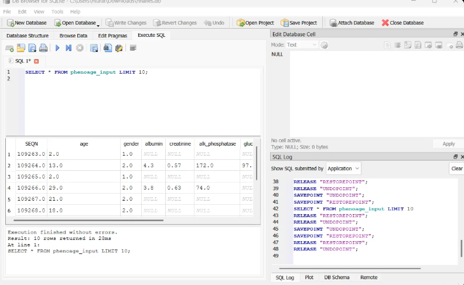
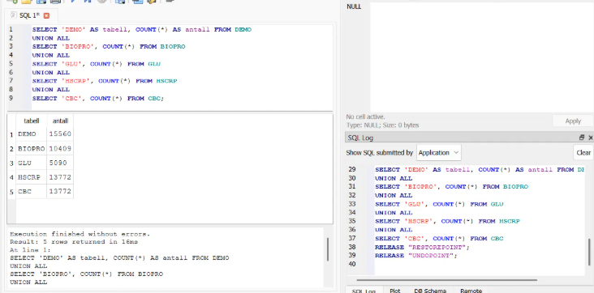
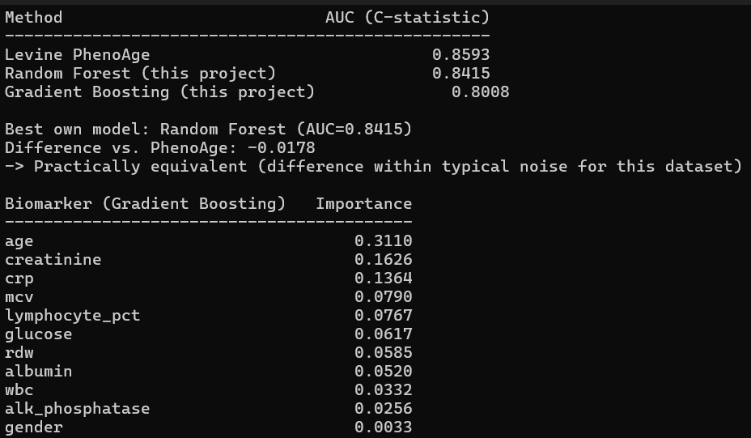
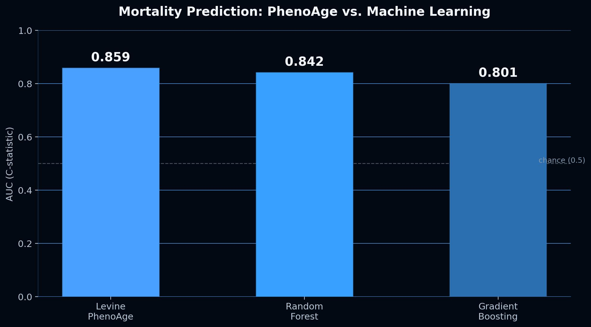

← Back to projects
Bioinformatics / SQL / Machine Learning
Biological Age Predictor & Mortality Model
Can machine learning models using routine blood biomarkers and demographic information approach the mortality discrimination of a published biological aging formula? I built a Python and SQLite workflow to investigate this question using NHANES health data and recorded mortality.
Project overview
From blood biomarkers to mortality prediction
A project connecting biological interpretation, database engineering and machine learning through a shared, measurable outcome.
What does biological age mean?
Chronological age measures how many years someone has lived. Biological age attempts to describe someones biological condition using measurable characteristics, such as blood biomarkers. Different models capture different aspects of aging, so there is no single definitive biological age.
This project implements Levine’s Phenotypic Age, a published formula combining nine blood biomarkers with chronological age. It expresses a mortality-related biomarker profile on an age scale.
A Phenotypic Age above chronological age means that the formula assigns the person a profile associated with an older age. It does not mean that every organ or cell in their body has that age.
What did I investigate?
I compared the mortality discrimination of Phenotypic Age with Random Forest and Gradient Boosting classifiers trained on routine biomarkers and demographic information.
The analysis uses NHANES 2015–2016 data linked to mortality follow-up through December 31, 2019. The final complete-case sample contains 2,531 adults, including 109 participants who died during follow-up.
What did I build?
I built a Python and SQLite workflow that downloads and organizes demographic, laboratory and mortality records. Participant identifiers connect measurements from separate source files into one analysis dataset.
I implemented the published Phenotypic Age formula, including biomarker unit conversions, and trained two machine learning classifiers for comparison.
Different outputs, one evaluation outcome
Phenotypic Age produces an age-like score. The machine learning classifiers produce mortality prediction scores, rather than biological-age estimates in years.
Both can be evaluated by how well they distinguish participants who died during follow-up from those who survived. Recorded mortality therefore provides a shared outcome for comparing their discrimination.
- Data source
- NHANES + NCHS
- Survey cycle
- 2015–2016
- Mortality follow-up
- Through December 31, 2019
- Database
- SQLite
- Database interface
- DB Browser for SQLite
- Analysis
- Python + scikit-learn
- Target
- Recorded mortality
- Evaluation metric
- ROC AUC
Database
Structuring NHANES biomarker data for analysis
The analysis begins with data preparation: combining measurements stored across separate files into consistent, participant-level records.

01
NHANES 2015–2016
Building an analysis-ready dataset
NHANES distributes demographic and laboratory measurements
across separate component files. I used Python to read
the files and load their contents into SQLite, then
joined participant records using the identifier
SEQN.
SQL views brought the required biomarkers together.
Inspecting the phenoage_input dataset made
it possible to check the merged inputs before calculating
Phenotypic Age
The mortality file was parsed separately from its fixed-width format and linked to the health records using the same participant identifier.
SQL workflow
Inspecting the source tables
SQL provides a transparent way to inspect source records and assemble the inputs used by the analysis scripts.

02
Data preparation
Understanding the imported datasets
I inspected the available tables and their record counts before downstream analysis. The five source components contain demographics, standard biochemistry, fasting glucose, high-sensitivity CRP and complete blood counts.
Not every participant has every measurement. Restricting the analysis to adults with complete required biomarker data produced a final sample of 2,531 participants. This selection also matters when interpreting how well the findings generalize.
DEMO
BIOPRO
GLU
HSCRP
CBC
Biological inputs
What information goes into the models?
The nine biomarkers span several physiological domains. Their value in this project comes from their combined predictive information.
Biochemistry
Albumin, creatinine, glucose and alkaline phosphatase provide measurements used in the published Phenotypic Age formula.
Inflammation & immune cells
C-reactive protein, white blood cell count and lymphocyte percentage contribute information about inflammatory and immune-related characteristics.
Red blood cell measurements
Mean cell volume describes average red blood cell size. Red cell distribution width describes variation in their size.
Demographic information
Phenotypic Age uses chronological age alongside the nine biomarkers. The ML models additionally include the demographic variable described as gender in the project.
Model analysis
Comparing a published formula with learned models
Phenotypic Age applies a fixed published formula. Random Forest and Gradient Boosting learn relationships between the inputs and mortality outcomes in the training data.

03
Model output
Random Forest scored closest to Phenotypic Age
The best self-built model was Random Forest, achieving an AUC of 0.8415, compared with 0.8593 for Phenotypic Age. Gradient Boosting achieved 0.8008.
These are observed performance estimates in this analysis. Their uncertainty needs to be quantified before concluding whether the differences are statistically meaningful.
Highest Gradient Boosting importance
Age
0.3110
Creatinine
0.1626
CRP
0.1364
Feature importance describes how a fitted model uses its inputs. It does not establish that a variable causes aging or mortality.
Methods explained
How the comparison works
Phenotypic Age
I implemented Levine’s published formula using nine biomarkers and chronological age, including the required unit conversions. The resulting score was evaluated against recorded mortality.
Random Forest
Random Forest combines predictions from many decision trees. Bootstrap sampling and feature subsampling introduce variation between trees, and their combined predictions can be more stable than a single tree.
Gradient Boosting
Gradient Boosting builds trees sequentially, with each stage improving the current model’s fit. Performance depends on choices such as tree complexity, learning rate and the number of boosting stages.
Cross-validation
The ML models were evaluated using five-fold stratified cross-validation. Each fold was held out in turn, producing predictions for participants who were not used to train that fold’s model.
Stratification helps maintain the outcome balance across folds. It does not eliminate overfitting or replace independent external validation.
Final results
Mortality prediction performance
Phenotypic Age achieved the highest observed ROC AUC. Random Forest was the strongest of the two self-built classifiers.

Understanding the results
What do these scores actually mean?
Discrimination describes how well a model ranks participants. It is only one part of evaluating a health-related prediction model.
AUC measures ranking
ROC AUC measures separation between participants with and without the recorded outcome. An AUC of 0.5 represents chance-level ranking, while 1.0 represents perfect separation.
0.8415 is not 84% accuracy
For a randomly selected participant who died and one who survived, this AUC corresponds to ranking the participant who died higher about 84% of the time, with ties counted as half. It is not the percentage of individual predictions classified correctly.
Close scores, with uncertainty
Random Forest scored 0.0178 AUC below Phenotypic Age. Confidence intervals and a paired comparison are needed to assess the uncertainty around this difference. Close point estimates do not establish equivalence.
Ranking is not absolute risk
A model can rank participants well while overestimating or underestimating their probability of death. Calibration assessment would evaluate how closely predicted probabilities agree with observed outcomes.
Key findings
What the project demonstrated
A mortality-related signal
Phenotypic Age achieved an AUC of 0.8593 in the analyzed cohort. Its score distinguished participants with and without recorded mortality during follow-up.
Random Forest came close
Random Forest achieved 0.8415 AUC using biomarkers and demographic information. It scored closer to the published baseline than Gradient Boosting in this experiment.
Age-gap differences
Participants who died had a mean Phenotypic Age gap of +7.5 years, compared with −1.7 years among survivors. This is a descriptive association within the analytic sample.
Outcomes beyond chronological age
The project assessed recorded mortality rather than judging a model by how closely it reproduces chronological age. This links evaluation to a health-related outcome.
Limitations
Interpreting the findings
This is an exploratory analysis and a demonstration of a computational workflow. It is not a clinically validated tool for individual health decisions.
Limited outcome events
There were 109 recorded deaths among 2,531 participants. The limited number of events creates uncertainty around performance estimates and restricts how complex a model can be reliably evaluated.
Complete-case selection
Participants needed complete required biomarker data to enter the analytic sample. Differences between included and excluded participants may affect how representative the results are.
Different input sets
The ML models include an additional demographic variable beyond the inputs used by Phenotypic Age. The comparison therefore evaluates these specific implementations rather than identical input sets.
Internal evaluation
Cross-validation evaluates the ML workflow within this dataset. Testing on an independent cohort is needed to assess generalization beyond the current analytic sample.
Follow-up time
Participants can have different lengths of follow-up. Binary mortality classification does not explicitly account for event timing or censoring in the way a survival-analysis approach would.
Survey design & uncertainty
NHANES uses a complex sampling design. Population-level interpretation requires attention to survey weights and design. Confidence intervals and calibration assessment would also strengthen the evaluation.
Analysis workflow
Core project files
The scripts separate data acquisition, mortality linkage, formula implementation and model comparison into identifiable workflow stages.
nhanes_download_setup.py ↗
NHANES data acquisition and database setup
nhanes_mortality_setup.py ↗
Mortality-file preparation and participant linkage.
calculate_phenoage.py ↗
Phenotypic Age calculation and age-gap output
calculate_phenoage_mortality.py ↗
Phenotypic Age and recorded mortality analysis.
compare_mortality_models.py ↗
Random Forest and Gradient Boosting comparison.
README.md ↗
Project overview, methods and reported results
Future work
Strengthening the analysis
Quantify uncertainty
Add confidence intervals and paired comparisons of model discrimination, alongside calibration plots and probability-based evaluation.
Audit the evaluation pipeline
Check that preprocessing and model selection remain within training folds. Compare identical feature sets and include chronological age alone as a simple baseline.
Model time-to-event outcomes
Explore survival-analysis methods that account for follow-up duration and censoring, rather than reducing mortality to a binary outcome.
Test generalization
Evaluate the workflow in an independent cohort or a compatible additional NHANES cycle, with careful attention to measurement consistency and survey design.
Project skills
Technologies demonstrated
Connecting public health data, relational databases, scientific programming and model evaluation in one documented analysis workflow.
SQL
SQLite
Database Management
DB Browser for SQLite
Python
pandas
NHANES
Data Preparation
Mortality Linkage
Biomarker Analysis
Random Forest
Gradient Boosting
scikit-learn
Cross-validation
ROC AUC
Sources & documentation
Explore the data and methods
NHANES laboratory data
Public laboratory component files for the 2015–2016 survey cycle.
View CDC data ↗Project documentation
The repository documents the workflow, Phenotypic Age implementation and mortality-model comparison.
Read documentation ↗Source code
Explore the full analysis
Inspect the Python scripts and database workflow behind the NHANES biological age and mortality analysis